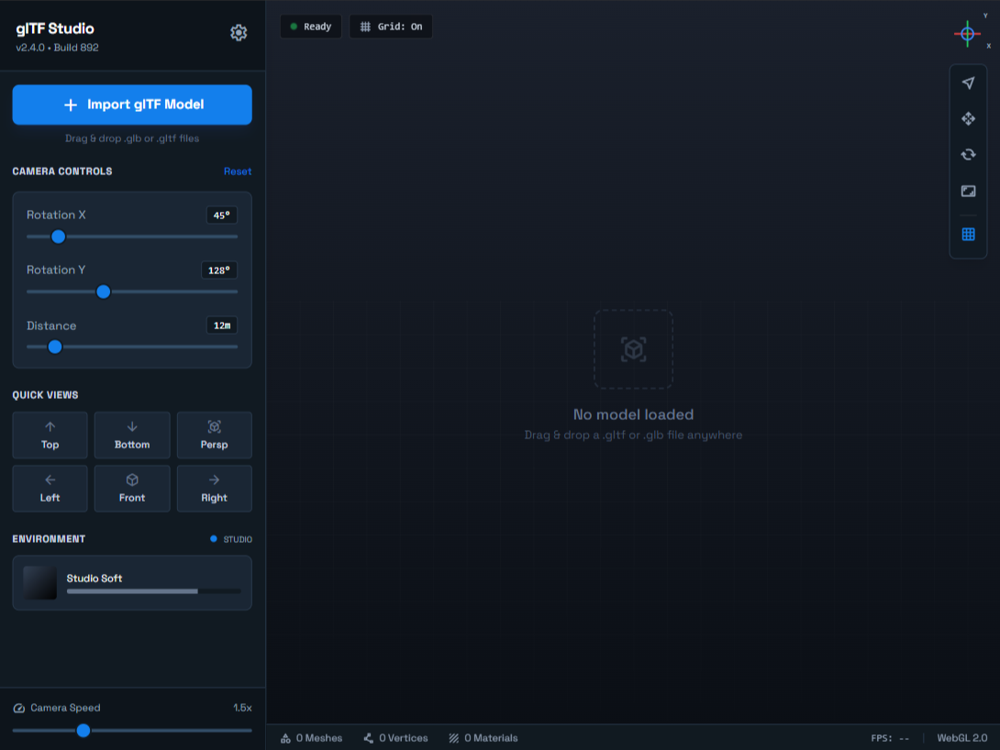

C++
Qt
CMake
BlendViewer
A lightweight glTF model viewer built with Qt and OpenGL, designed for quick inspection and navigation of 3D assets.
View Case Study arrow_forward
Software engineering student who enjoys building things that actually do something. Drawn to practical projects and picking up new tools — exploring Qt, OpenGL, and C.
A lightweight glTF model viewer built with Qt and OpenGL, designed for quick inspection and navigation of 3D assets.
A C# application designed to download YouTube videos fast, efficiently and reliably. Providing a simple and quick way to save videos and/or audio.

@Connect - Second Year FullStack Development Assignment - Complete Social Media Website for social networking.
A Python application created to perform matrix operations within a graphical user interface.
Personal Application Framework for creating interesting projects in C++. Lead to the creation of BlendViewer

Inspired my C# App, initially developed in python as a UI + terminal interface.